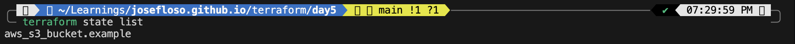

When working with Terraform, it’s easy to focus only on writing .tf files and running commands. However, behind the scenes, there is one component that makes everything work: the state file. Understanding what Terraform state is, why it exists, and what happens when it is missing is very important.
Terraform state is a file (terraform.tfstate) that stores information about the infrastructure Terraform has created.
It keeps track of:
In simple terms, state is Terraform’s memory.
After running:
terraform init terraform apply
Terraform creates the infrastructure and generates a state file.
To inspect it, I used:
terraform state list

This command shows all resources currently tracked by Terraform.
Next, I explored more details using:
terraform state show aws_s3_bucket.example

This reveals:
Terraform relies on the state file to:
Without state, Terraform cannot compare your configuration to real-world resources.
To test this, I removed the state file:
rm terraform.tfstate terraform plan
Terraform behaved as if nothing existed and attempted to recreate everything.
This shows that without state:
plan and apply depend on itterraform.tfstate to Git.gitignore file to exclude itThis lab made it clear that Terraform is not just about writing infrastructure code. It is about managing state effectively.
Once you understand state, Terraform becomes much more predictable and easier to work with.